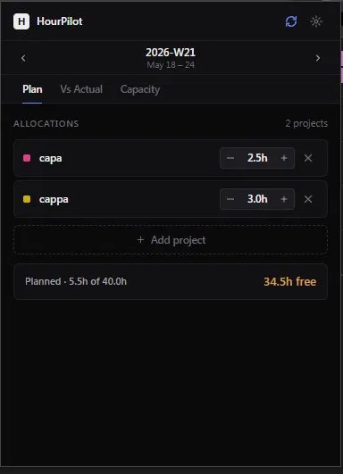
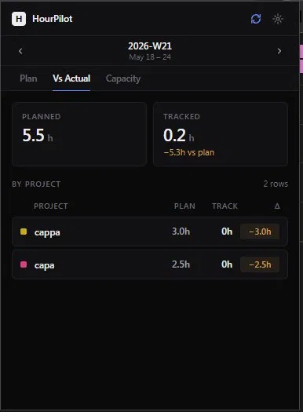
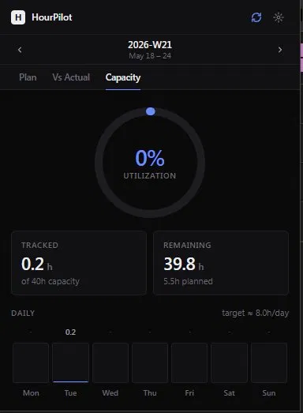

The missing planning layer for Toggl.
Plan your week, track planned vs actual, see your real capacity. HourPilot reads from Toggl and lives in your browser — no account, no backend, no data leaves your machine.
Allocate hours per project, per week.
Pull projects from Toggl, set planned hours with a quick stepper. Footer shows what's left of your capacity. That's the whole workflow — no boards, no tasks, no clutter.

See planned vs tracked at a glance.
Live deltas per project. Amber when you're under plan, red when you've overrun, green when you're on track. Untracked work shows up too — projects you billed time to but didn't plan for.

Know if you're overloaded before Friday.
Weekly utilization donut. Daily bars Monday to Sunday. Open the popup mid-week, glance at the color, close it. That's it.

Local-first
Your token and plans live in chrome.storage. No server, no account, no telemetry. Disconnect anytime — everything wipes.
Read-only
HourPilot never writes to your Toggl account. It reads projects, clients, and time entries. That's it.
Fast
Opens instantly. Cached aggressively. Hand-built UI — no bloated component libraries, no 100KB chart packages.
Honest
No AI features. No "smart suggestions." Three tabs that do exactly what they say. Free, with no paid tier hiding behind a paywall.
Get HourPilot
Free. Works with any Toggl account.
Install the extension
The Chrome Web Store version is in review. Until then, download the source from GitHub and load it as an unpacked extension. Build instructions are in the README.
Get from GitHubConnect to Toggl
Open the popup, paste your Toggl API token (found at track.toggl.com/profile), set your weekly capacity. Takes about 30 seconds.
Plan and track
Add your projects, set planned hours, work in Toggl as usual. Open HourPilot mid-week to see how reality is matching the plan.